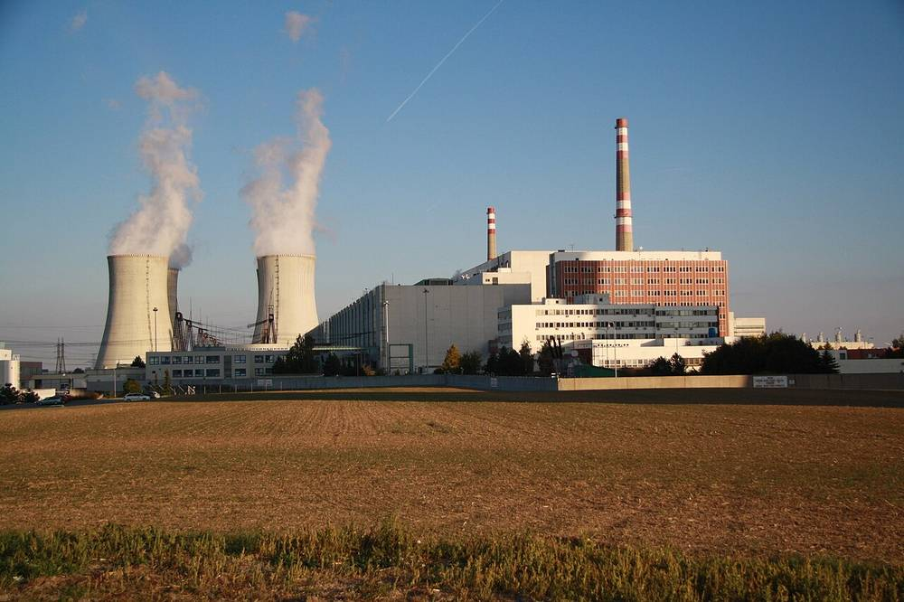

체코 원전 시공사 교체 속 산업부 두 번째 점검회의…한수원, 새 시공사 선정까지 주 단위 일정 보고

11월 셋째 주까지 계획대로 진행했다고 설명 / 12월 10일 한국서 제4차 한·체코 장관급 두코바니 이행점검 협의체
체코 두코바니 원전 사업을 두고 산업통상부가 11월 18일 박동일 차관이 이끄는 「한수원 추진계획 점검회의」를 다시 열었다. 두 번째인 이번 회의는 대한상의에서 열렸고, 첫 회의에서 논의한 주 단위 일정표가 지켜지는지가 안건이었다. 보고에 나선 한수원은 올해 남은 기간 공사가 멈추지 않게 챙길 일(설계·인허가, 부지정보 검증, 숙소부지 선정)과 새 시공사를 뽑는 일을 주마다 나눈 일정표를 내놨고, 11월 셋째 주까지 일정대로 진행됐다고 했다. 산업부는 앞서 11월 12일 장관 주재 회의에서 새 시공사 선정을 2027년 7월까지 마친다는 목표를 밝혔고, 한수원은 이번 회의에서 11월 5일 한·체코 산업통상부 국장급 영상회의와 11월 9~12일 한국을 찾은 체코 발주사 EDUII와의 업무협의로 현안을 나누고 있다고 설명했다.
11월부터 장관·차관 주재로 돌리는 비상관리체제(정부가 일정과 현안을 직접 챙기는 점검 체계)의 하나로 11월 2일 첫 회의에 이어 열린 이번 자리에서, 박 차관은 일정이 늦어질 위험에 대비해 속도를 내되 품질과 가격 약속은 지켜야 한다고 주문했다. 정부 간 협의도 장관급 월간회의와 국장급 주간회의로 늘렸고, 12월 10일 한국에서 제4차 한·체코 장관급 두코바니 이행점검 협의체가 열린다.
시민에너지 관점
산업부 자료에는 주 단위 계획을 차질 없이 지켰다는 한수원 설명만 있고, 어떤 업무가 몇 주 차에 끝났는지, 시공사 교체로 비용이 얼마나 달라지는지는 나오지 않는다. 장관·차관 회의에 주간·월간 정부 간 회의까지 붙였다는 것은 그만큼 일정 관리가 무거운 과제가 됐다는 뜻이다. 공기업이 맡은 대형 해외 사업의 위험은 결국 공공 재정과 이어진다. 정부는 점검회의마다 이정표별 진척과 비용 변화를 국민이 볼 수 있게 공개해야 한다.
출처: 산업통상부 2026-11-18 「산업부, 차관 주재 「한수원 추진계획 점검회의」 2차 회의 개최」 보도자료(원전수출협력과, 11월 19일 조간) 원문 보기
출처: 산업통상부 2026-11-12 장관 주재 「팀코리아 체코 원전사업 추진현황 점검회의」 개최 보도자료(새 시공사 2027년 7월 선정 목표) 원문 보기
チェコ原発の施工会社交代の中、産業通商部が2回目の点検会議…韓水原、新施工会社の選定まで週単位の日程を報告
11月第3週まで計画通り進めたと説明 / 12月10日に韓国で第4回韓・チェコ閣僚級ドゥコバニ履行点検協議体
産業通商部は11月18日、大韓商工会議所でパク・ドンイル次官の主宰により「韓水原推進計画点検会議」の2回目の会議を開き、チェコ・ドゥコバニ原発事業の週単位の詳細管理計画を点検した。韓国水力原子力(韓水原)は、施工が途切れないよう設計・許認可、敷地情報の検証、宿舎用地の選定業務と、新たな施工会社の選定業務を2026年内に週単位で管理する計画を報告し、11月第3週まで計画通りに進めてきたと明らかにした。産業通商部は先に11月12日の長官主宰会議で、新施工会社の選定を2027年7月までに終える目標を示しており、韓水原は今回の会議で、11月5日の韓・チェコ産業通商部局長級のオンライン会議と、11月9〜12日に来韓したチェコの発注者EDUIIとの業務協議を通じて懸案を共有していると説明した。
11月から長官・次官主宰で運営している非常管理体制(政府が日程と懸案を直接点検する体制)の一環として、11月2日の1回目に続いて開かれた今回の会議で、パク次官は日程が遅れるリスクに備えてスピードを上げつつ、品質と価格の約束は守るよう求めた。政府間協議も閣僚級の月例会議と局長級の週例会議に広げており、12月10日には韓国で第4回韓・チェコ閣僚級ドゥコバニ履行点検協議体が開かれる。
市民エネルギーの視点
産業通商部の資料には、週単位の計画を支障なく守ったという韓水原の説明しかなく、どの業務が何週目に終わったのか、施工会社の交代で費用がどれだけ変わるのかは示されていない。長官・次官会議に週例・月例の政府間会議まで加えたのは、それだけ日程管理が重い課題になったということだ。公企業が担う大型海外事業のリスクは、結局は公共財政につながる。政府は点検会議のたびに、マイルストーンごとの進捗と費用の変化を国民が見られるよう公開すべきだ。
出典: 산업통상부 2026-11-18 「산업부, 차관 주재 「한수원 추진계획 점검회의」 2차 회의 개최」 보도자료(원전수출협력과, 11월 19일 조간) 原文を読む
出典: 산업통상부 2026-11-12 장관 주재 「팀코리아 체코 원전사업 추진현황 점검회의」 개최 보도자료(새 시공사 2027년 7월 선정 목표) 原文を読む
捷克核电站更换施工方之际，产业通商部召开第二次检查会议…韩水原报告至选定新施工方的周度日程
称截至11月第三周按计划推进 / 12月10日在韩国召开第四次韩捷部长级杜科瓦尼履约检查协商机制会议
产业通商部于11月18日在大韩商工会议所由次官朴东一(音译，Park Dong-il)主持召开第二次"韩水原推进计划检查会议"，检查捷克杜科瓦尼核电项目的周度详细管理计划。韩国水力原子力(韩水原)报告了为保证施工不中断，在2026年内按周管理设计与许可、场地信息核查、宿舍用地选定以及新施工方选定等业务的计划，并表示截至11月第三周一直按计划推进。产业通商部此前在11月12日部长主持的会议上提出在2027年7月前完成新施工方选定的目标；韩水原在本次会议上说明，通过11月5日韩捷产业通商部司局级视频会议，以及与11月9日至12日访韩的捷克业主EDUII的工作协商，双方正在共享待解决问题。
本次会议是11月起由部长、次官主持运行的紧急管理体制(政府直接掌握日程和问题的检查机制)的一部分，继11月2日第一次会议之后召开。朴次官要求为应对进度延误风险加快推进，同时必须遵守质量和价格承诺。政府间协商也扩大为部长级月度会议和司局级周度会议，12月10日还将在韩国召开第四次韩捷部长级杜科瓦尼履约检查协商机制会议。
市民能源视角
产业通商部的资料只有韩水原关于周度计划顺利执行的说明，没有写明哪些业务在第几周完成，也没有说明更换施工方会使费用变化多少。在部长、次官会议之外再加上周度、月度政府间会议，说明进度管理已成为沉重的课题。公共企业承担的大型海外项目的风险，最终与公共财政相连。政府应在每次检查会议后公开各里程碑的进展和费用变化，让国民能够看到。
来源: 산업통상부 2026-11-18 「산업부, 차관 주재 「한수원 추진계획 점검회의」 2차 회의 개최」 보도자료(원전수출협력과, 11월 19일 조간) 查看原文
来源: 산업통상부 2026-11-12 장관 주재 「팀코리아 체코 원전사업 추진현황 점검회의」 개최 보도자료(새 시공사 2027년 7월 선정 목표) 查看原文
As the Czech nuclear project changes builders, Korea's trade ministry holds second review meeting; KHNP reports a week-by-week schedule up to selecting a new contractor
KHNP says work has gone to plan through the third week of November / Fourth Korea-Czech ministerial Dukovany implementation review body to meet in Korea on 10 December
Korea's Ministry of Trade and Industry held the second "KHNP implementation plan review meeting" on 18 November at the Korea Chamber of Commerce and Industry, chaired by Vice Minister Park Dong-il, to check the week-by-week management plan for the Dukovany nuclear project in the Czech Republic. Korea Hydro & Nuclear Power (KHNP) reported a plan to manage, week by week through 2026, the design and licensing, site data verification and housing site selection needed to keep construction moving, along with the selection of a new construction contractor, and said the plan had been followed through the third week of November. The ministry had set a goal at a meeting chaired by the minister on 12 November of finishing the selection of a new contractor by July 2027, and at this meeting KHNP said it was sharing pending issues with the Czech side through a director-level video conference of the two trade ministries on 5 November and talks with the Czech project owner EDUII, whose delegation visited Korea from 9 to 12 November.
The meeting followed the first one on 2 November as part of the emergency management system the ministry has run under the minister and vice minister since November, a review structure in which the government directly tracks the schedule and pending issues. Park called for faster progress to guard against the risk of delays, while keeping promises on quality and price. Government-to-government talks have also been widened to monthly ministerial and weekly director-level meetings, and the fourth Korea-Czech ministerial Dukovany implementation review body will meet in Korea on 10 December.
Citizen Energy View
The ministry's release carries only KHNP's statement that the weekly plan was kept without a hitch; it does not say which tasks were finished in which week, or how much costs will change with the switch of contractor. Adding weekly and monthly intergovernmental meetings on top of minister- and vice-minister-level reviews shows how heavy the task of managing the schedule has become. The risks of a large overseas project carried by a public company ultimately feed back into public finances. The government should publish progress against each milestone and any change in costs after every review meeting so that the public can see them.
Source: 산업통상부 2026-11-18 「산업부, 차관 주재 「한수원 추진계획 점검회의」 2차 회의 개최」 보도자료(원전수출협력과, 11월 19일 조간) Read the original
Source: 산업통상부 2026-11-12 장관 주재 「팀코리아 체코 원전사업 추진현황 점검회의」 개최 보도자료(새 시공사 2027년 7월 선정 목표) Read the original